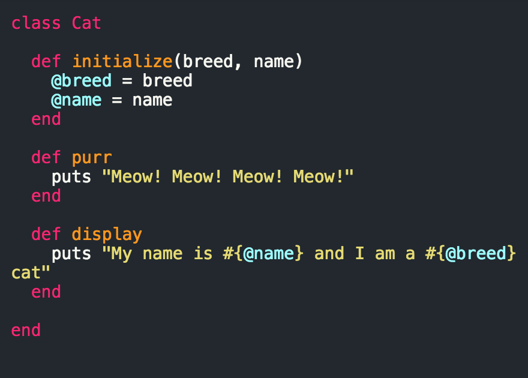
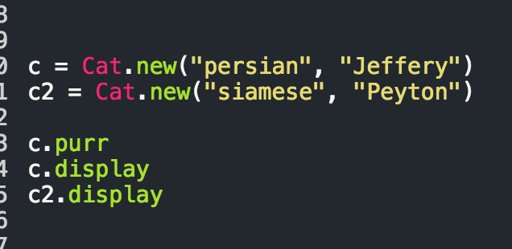
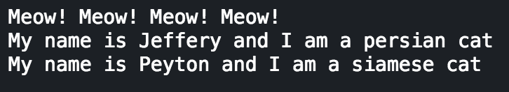

Class
Stay Classy Internet
July 17, 2015
In this week of DBC Phase 0 we focused on Ruby classes. Ruby is an object oriented language, meaning everything in ruby is an object, kind of like in real life, and these objects are classified into classes, like biological taxonomy.
Classes
RubyLearning.com defines class as "Classes in Ruby are first-class objects - each is an instance of class Class. When a new class is defined (typically using class Name ... end), an object of type Class is created and assigned to a constant (Name. in this case). When Name.new is called to create a new object, the new class method in Class is run by default, which in turn invokes allocate to allocate memory for the object, before finally calling the new object's initialize method. The constructing and initializing phases of an object are separate and both can be over-ridden. The construction is done via the new class method; the initialization is done via the initialize instance method. Initialize is not a constructor!" Which, to be frank is a bit of a mouthful.
A class in ruby is like a family. It gives a set of parameters and attributes that each member of the family will have, but doesn't specify every member of the family.
For example:

Here, we have created a class called Cat, which is a global constant. We did this by calling class on Cat on the first line (syntax here is important so the "c" in class is lowercase but the "C" in Cat is uppercase because it is the title of the class). We have initialized the variables but using "@" for both @breed and @name, so that are able to use them in various methods across the class, making them instance variables. Once we've defined the class and initialized the variables that we plan on using across methods, we can create as many methods as we want inside the class to define what ever parameters we desire for that class. In the above example, we ask the cat to purr, and to display its name and breed. Once we've defined all the methods we want for a given class, we can call on it for specific objects.

Here we are calling on the class for specific instances of cats. We have to create an object name (c and c2) for each individual type of cat from the cat class. The results are:

Simply put, using classes in ruby is an easy way to set parameters that can be called on a lot of different objects.